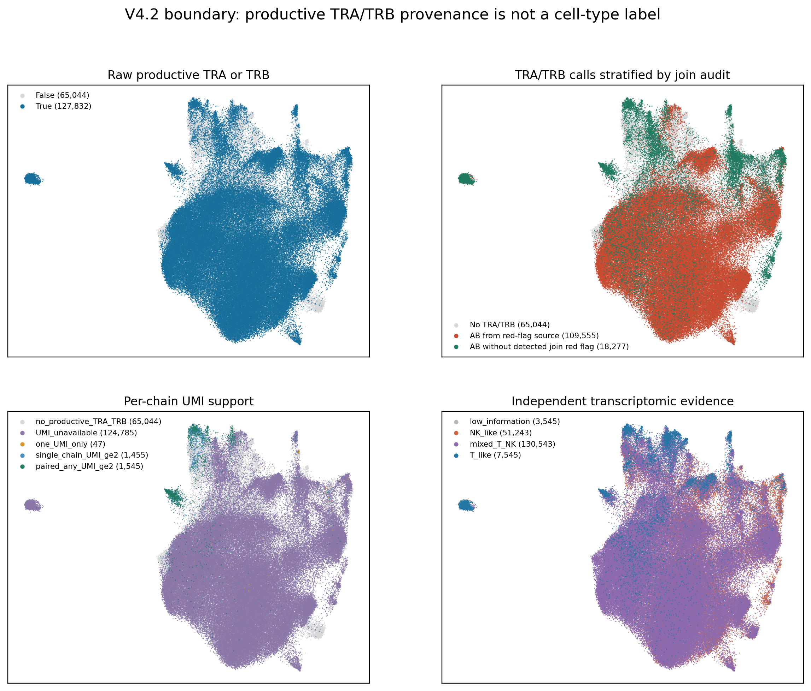
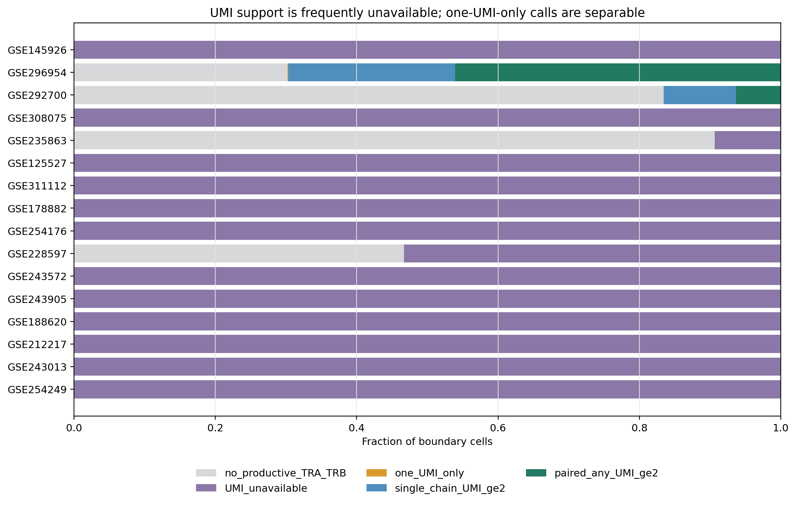
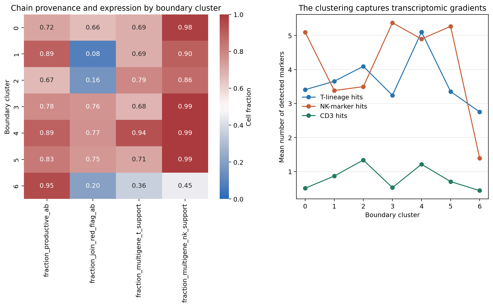
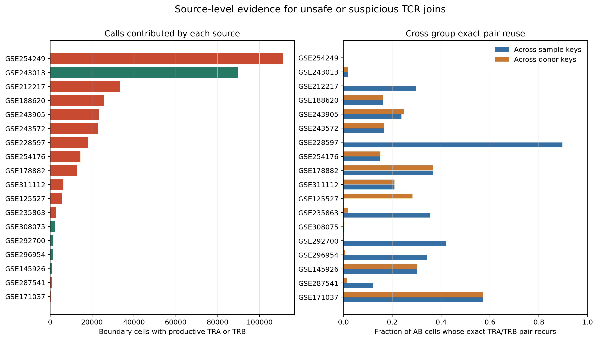

Why is productive TRA/TRB so frequent in the V4.2 NK boundary?
A four-hypothesis forensic audit of 475,953 cells. This report is diagnostic and does not redefine NK truth or mutate source data.
1. Scope and definitions
The boundary is the frozen union of refined parent clusters 9 and 18 from the T/NK-restricted V4.2 integration. A productive chain call means a nonempty productive-filtered CDR3 field. Zero UMI/read values are treated as unavailable because legacy import code used zero when support was absent. A one-UMI-only call requires an observed positive UMI value and no chain with two or more UMIs.
A source receives a join red flag only from auditable evidence: a documented barcode-only mapping mode, extensive exact paired-receptor reuse across sample/donor keys, or strong conflict with source author lineages. This is a quarantine signal, not an estimate of how many individual calls are wrong.

2. Hypothesis 1: ambient TCR reads
Among 3,047 productive-AB cells with at least one observed positive chain UMI, 47 (1.54%) have no chain above one UMI. In contrast, 3,000 have at least one chain with two or more UMIs, and 3,047 have at least ten reads for a chain. This argues against ambient one-UMI calls as the main explanation in sources with quantitative support.
Important limitation: 370,292 productive-AB cells have no usable UMI field. They remain unresolved for ambient contamination. Moreover, high UMI/read support validates the receptor in its originating VDJ library, but not the RNA cell to which it was joined.

3. Hypothesis 2: non-ideal HVGs, UMAP, or clustering
The refined scVI model used 4,000 genes. It forced 27/27 specified T/NK lineage genes into the model. TCR V/J/D genes were intentionally excluded so clonotype usage would not drive atlas geometry; constant-region and signaling genes such as CD3D/E/G, TRAC, TRBC1/2, LCK, TRAT1, BCL11B, KLRD1, FCER1G, and TYROBP were retained.
Boundary cluster association is quantified below. The cluster-expression association should be interpreted alongside the much broader source and raw-chain associations. A better boundary-specific integration may sharpen biology after TCR repair, but it cannot make an unsafe receptor join valid.

| variable | normalized_mutual_information_with_boundary_cluster | cramers_v_with_boundary_cluster |
|---|---|---|
| productive_ab | 0.02405 | 0.2195 |
| expression_class | 0.07551 | 0.3087 |
| source_gse_id | 0.2147 | 0.4578 |
| join_audit_status | 0.161 | 0.3671 |
| gene | selected_for_refined_scvi | role |
|---|---|---|
| CD3D | True | T_lineage |
| CD3E | True | T_lineage |
| CD3G | True | T_lineage |
| CD247 | True | T_lineage |
| TRAC | True | T_lineage |
| TRBC1 | True | T_lineage |
| TRBC2 | True | T_lineage |
| TRDC | True | NK_or_context |
| TRGC1 | True | NK_or_context |
| TRGC2 | True | NK_or_context |
| LCK | True | T_lineage |
| TRAT1 | True | T_lineage |
| BCL11B | True | T_lineage |
| THEMIS | True | T_lineage |
| KLRD1 | True | NK_or_context |
| NCR1 | True | NK_or_context |
| FCGR3A | True | NK_or_context |
| KLRC1 | True | NK_or_context |
| KLRF1 | True | NK_or_context |
| S1PR5 | True | NK_or_context |
| FCER1G | True | NK_or_context |
| TYROBP | True | NK_or_context |
| LST1 | True | NK_or_context |
| AIF1 | True | NK_or_context |
| CTSS | True | NK_or_context |
| LILRB1 | True | NK_or_context |
| LILRB2 | True | NK_or_context |
4. Hypothesis 3: TCRs joined to the wrong cells
The project SOP states that historical barcode-only or barcode-prefix joins are unsafe because 10x barcodes are reused across samples. The legacy mapping report explicitly records such modes for affected sources. Independently, exact TRA/TRB pairs recur across multiple sample or donor keys, sometimes in a large fraction of assigned cells. Exact paired alpha/beta receptors shared at this scale across unrelated groups are not a plausible ambient-RNA pattern.

Source overview
| source | boundary_cells | productive_AB | AB_fraction | join_audit | recorded_mapping |
|---|---|---|---|---|---|
| GSE254249 | 111081 | 111081 | 1 | documented_unsafe_barcode_join | barcode_only |
| GSE243013 | 89772 | 89754 | 0.9998 | no_join_failure_detected | not_recorded |
| GSE212217 | 33344 | 33344 | 1 | highly_suspicious_cross_sample_reuse | not_recorded |
| GSE188620 | 25755 | 25755 | 1 | highly_suspicious_cross_donor_reuse | not_recorded |
| GSE243905 | 23166 | 23166 | 1 | highly_suspicious_cross_donor_reuse | not_recorded |
| GSE243572 | 22680 | 22680 | 1 | highly_suspicious_cross_donor_reuse | not_recorded |
| GSE228597 | 34123 | 18184 | 0.5329 | highly_suspicious_cross_sample_reuse | not_recorded |
| GSE254176 | 14373 | 14372 | 0.9999 | highly_suspicious_cross_donor_reuse | not_recorded |
| GSE178882 | 12780 | 12779 | 0.9999 | highly_suspicious_cross_donor_reuse | not_recorded |
| GSE311112 | 6224 | 6223 | 0.9998 | highly_suspicious_cross_donor_reuse | not_recorded |
| GSE125527 | 5517 | 5514 | 0.9995 | highly_suspicious_cross_donor_reuse | not_recorded |
| GSE235863 | 28281 | 2640 | 0.09335 | highly_suspicious_cross_sample_reuse | not_recorded |
| GSE308075 | 2186 | 2186 | 1 | no_join_failure_detected | not_recorded |
| GSE292700 | 9338 | 1548 | 0.1658 | no_join_failure_detected | not_recorded |
| GSE296954 | 1703 | 1188 | 0.6976 | no_join_failure_detected | not_recorded |
| GSE145926 | 865 | 865 | 1 | no_join_failure_detected | not_recorded |
| GSE287541 | 23459 | 828 | 0.0353 | highly_suspicious_cross_sample_reuse | not_recorded |
| GSE171037 | 438 | 414 | 0.9452 | highly_suspicious_cross_donor_reuse | not_recorded |
| GSE211504 | 325 | 325 | 1 | highly_suspicious_cross_donor_reuse | not_recorded |
| GSE294273 | 1322 | 122 | 0.09228 | source_h5ad_unavailable | not_recorded |
| GSE287301 | 3098 | 108 | 0.03486 | no_join_failure_detected | not_recorded |
| GSE252762 | 83 | 83 | 1 | no_join_failure_detected | not_recorded |
| GSE159251 | 142 | 74 | 0.5211 | no_join_failure_detected | not_recorded |
| GSE240865 | 537 | 72 | 0.1341 | no_join_failure_detected | not_recorded |
| GSE234069 | 478 | 25 | 0.0523 | no_join_failure_detected | not_recorded |
| GSE114724 | 33 | 9 | 0.2727 | no_join_failure_detected | not_recorded |
| GSE162498 | 318 | 0 | 0 | no_join_failure_detected | not_recorded |
| GSE267645 | 19168 | 0 | 0 | no_join_failure_detected | not_recorded |
| GSE301528 | 5364 | 0 | 0 | no_join_failure_detected | not_recorded |
Exact-pair reuse and lineage conflicts
| source | sample_key | AB_exact_pair_cross_sample | donor_key | AB_exact_pair_cross_donor | author_NK_with_AB | author_nonT_with_AB |
|---|---|---|---|---|---|---|
| GSE254249 | NaN | 0 | NaN | 0 | ||
| GSE243013 | sampleID | 0.01807 | sampleID | 0.01807 | 0.9999 | |
| GSE212217 | orig.ident | 0.2972 | NaN | 0 | ||
| GSE188620 | sample | 0.1619 | donor | 0.1619 | ||
| GSE243905 | sample | 0.2382 | donor | 0.2469 | 0.4919 | |
| GSE243572 | sample | 0.167 | donor | 0.167 | ||
| GSE228597 | sample_id | 0.8969 | NaN | 0 | ||
| GSE254176 | sample | 0.1509 | donor | 0.1509 | ||
| GSE178882 | sample | 0.3673 | donor | 0.3673 | ||
| GSE311112 | sample | 0.2094 | donor | 0.2094 | ||
| GSE125527 | NaN | 0 | patient_assignment | 0.2833 | 1 | 1 |
| GSE235863 | library_id | 0.3555 | donor_id | 0.01778 | 0 | |
| GSE308075 | sample | 0.00413 | donor | 0.00413 | ||
| GSE292700 | library_id | 0.42 | donor_id | 0.0009358 | ||
| GSE296954 | library_id | 0.342 | donor_id | 0.007775 | ||
| GSE145926 | sample | 0.3028 | donor | 0.3028 | ||
| GSE287541 | library_id | 0.1221 | donor_id | 0.01475 | 0.04151 | |
| GSE171037 | sample | 0.5729 | donor | 0.5729 | ||
| GSE211504 | sample | 0.2758 | donor | 0.2758 | ||
| GSE294273 | NaN | NaN | ||||
| GSE287301 | library_id | 0.03884 | donor_patient | 0.009352 | ||
| GSE252762 | sample | 0.08759 | donor | 0.08759 | ||
| GSE159251 | library_id | 0.2192 | donor_id | 0.00305 | ||
| GSE240865 | library_id | 0.07292 | NaN | 0 | ||
| GSE234069 | library_id | 0.4739 | donor_id | 0 | 0.2 | |
| GSE114724 | library_id | 0.3692 | donor_id | 0.0002603 | ||
| GSE162498 | sample | 0 | donor | 0 | ||
| GSE267645 | sample | 0 | donor | 0 | ||
| GSE301528 | sample | 0 | donor | 0 |
5. Hypothesis 4: these are truly alpha-beta T cells
Some cells are likely genuine alpha-beta T cells: the boundary was deliberately broad, cytotoxic T and NK transcriptomes overlap, and productive paired receptors with multi-gene T-lineage expression are biologically coherent. However, truth can only be assessed after quarantining red-flag sources.
The conservative residual count is 1,508: paired TRA/TRB, no detected source join red flag, at least one chain with two or more observed UMIs, and multi-gene T-lineage support. A further 66,270 cells are compatible with alpha-beta T identity but lack quantitative UMI support. These are descriptive audit strata, not replacement ground-truth labels.
| stratum | n_cells | n_productive_ab | fisher_odds_ratio_multigene_t_support | fisher_p | median_t_hits_ab | median_t_hits_no_ab | mannwhitney_u | mannwhitney_p | auc_t_marker_hits_for_ab |
|---|---|---|---|---|---|---|---|---|---|
| all_boundary | 475953 | 373339 | 1.584 | 0 | 4 | 3 | 2.257e+10 | 0 | 0.5892 |
| join_red_flag_sources | 341546 | 277305 | 2.074 | 0 | 4 | 3 | 1.134e+10 | 0 | 0.6368 |
| sources_without_join_red_flag | 134407 | 96034 | 0.8891 | 8.611e-18 | 4 | 4 | 1.815e+09 | 1.109e-05 | 0.4924 |
6. Decision and corrective action
- Quarantine productive TRA/TRB fields from every documented or strongly suspicious source for model truth and NK exclusion. Do not delete the original fields; add provenance-qualified replacements.
- Rebuild affected datasets from raw productive VDJ contigs using the canonical
sample_id + barcode_corekey, retaining UMI/read support and stopping when sample identity is ambiguous. - Validate each rebuilt source by key uniqueness, before/after coverage, exact receptor reuse across donors, and author-lineage conflicts. A high UMI count alone is not a join validation.
- Propagate only validated receptor fields into harmonized metadata, then regenerate the T/NK subset, HVGs, scVI latent space, and boundary clustering.
- Keep TCR V/J/D genes out of integration HVGs unless performing a separate sensitivity analysis; use them as classifier features or overlays after join repair, not as drivers of cell-state geometry.
Generated by workflows/gdtai/audit_gdtai_v4_2_boundary_tcr_conflicts.py. Source H5AD files were read only.